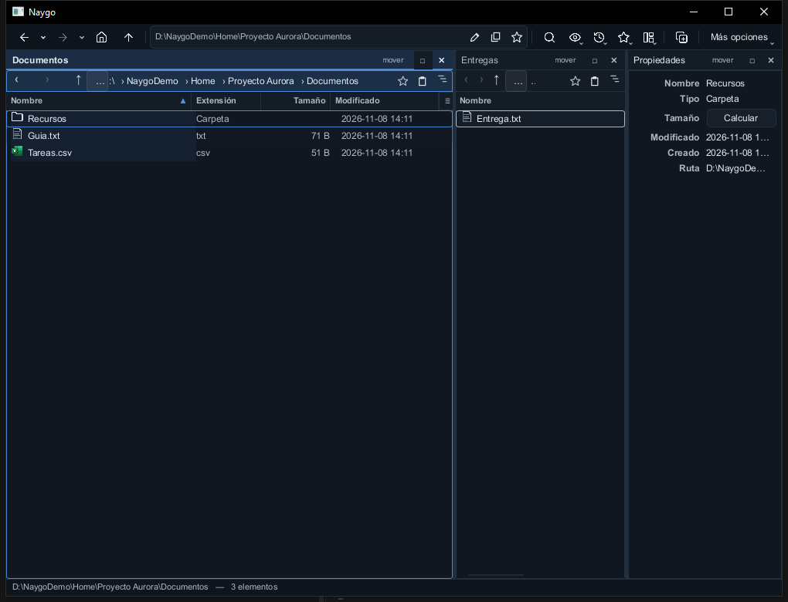

Naygo · lote 0.5.7 · fase 5 · 24 de noviembre de 2026
Propuesta visual: seis cambios para aprobar, ajustar o descartar
Nada de esto está implementado. Cada punto muestra cómo es hoy la interfaz según el código, cómo quedaría, qué cuesta y qué decisión necesito de ti. Las maquetas usan los colores reales del tema dark-blue.
Referencia: captura real de Naygo 0.5.4 a 1020 px de ancho, con la toolbar en modo compacto. Los puntos 2, 3, 4 y 6 se ven en ella.

1Toolbar agrupada, de un solo tono, con el atajo en cada tooltip
Hoy
- En modo ancho hay 21 controles, sin contar las unidades, repartidos en 9 tramos. Los separadores existen, pero no forman grupos reconocibles: Disposiciones, Espacios y Configuración quedan cada uno en un tramo de un solo botón.
- En modo compacto (bajo 1060 px) se oculta un separador y Favoritos, Disposiciones y Espacios quedan pegados. «Más opciones» es un botón de 96 px solo con texto.
- Espacios usa el mismo ícono que Clonar.
- El tooltip agrega el atajo cuando la acción tiene uno. No lo muestran diez controles: los dos historiales desplegables, Historial de carpetas, Favoritos, Panel, Intercambiar, Clonar, Apilar, Refrescar y Espacios. Favoritos no tiene atajo de fábrica; en los demás no comprobé si la acción tiene uno.
- Los íconos se tiñen con el color de texto del tema solo si el set es monocromo (el de fábrica, lucide, lo es). Con los sets fluent, flat-color, vivid y pastel la toolbar queda multicolor.
Maqueta del estado actual en modo ancho, con el orden y los tamaños del código (barra de 34 px, botones de 30 px, íconos de 16 px).
Propuesta
- Cinco grupos fijos, con los mismos separadores en modo ancho y compacto: navegar, buscar y ver, paneles, crear, sistema.
- Ícono propio para Espacios (capas) y un ícono de tres puntos para «Más opciones», que pasa de 96 px a 30 px.
- Tooltip con el formato «Nombre · atajo» en todos los controles cuya acción tenga atajo. A las que no tienen no se les inventa uno: muestran solo el nombre.
- La toolbar siempre se tiñe con el color de texto del tema. Los sets multicolor siguen aplicándose a los íconos de archivos y carpetas.
Las etiquetas punteadas son anotaciones de esta página: en la app solo se ven los separadores. La maqueta ya no incluye el campo de ruta, que es el punto 3; si descartas el punto 3, el campo queda entre Navegar y Buscar.
Costo y riesgo
- El ícono de Espacios tiene que existir en los 10 sets de íconos. En los que no lo traigan se usa el de lucide como respaldo.
- El orden de los botones no cambia, así que no se pierde la memoria de posición. Solo cambian los separadores: desaparecen los que aislaban a Disposiciones, Espacios y Configuración.
Decisión que necesito
¿Apruebas los cinco grupos? Y aparte: con un set de íconos multicolor, ¿la toolbar debe quedar de un solo tono (mi recomendación) o conservar el color del set?
2Un asa de arrastre en vez del texto «mover»
Hoy
- «mover» es un texto de 10 px en color secundario, sin tooltip. No es un botón: todo el encabezado se puede arrastrar, y el texto solo lo insinúa.
- El botón de maximizar tiene siempre el fondo del encabezado inactivo, así que sobre un panel activo dibuja una caja visible. Su tooltip no menciona Ctrl+Shift+M.
- Cerrar no tiene tooltip, y el clic derecho en el encabezado cierra el panel sin que nada lo anuncie.
- El asa va a la izquierda del título y muestra el cursor de mover. El encabezado completo sigue siendo arrastrable, como hoy.
- Tooltip del asa: «Arrastra para mover el panel». Maximizar: «Maximizar o restaurar · Ctrl+Shift+M». Cerrar: «Cerrar panel».
- Maximizar pasa a fondo transparente y a un ícono dibujado, igual que Cerrar.
- Se gana el ancho del texto «mover»: en un panel angosto el título se corta un poco más tarde.
Decisión que necesito
¿Apruebas el asa a la izquierda? La alternativa es dejarla a la derecha, donde hoy está el texto.
3Una sola barra de ruta
Hoy
- La ruta del panel activo aparece dos veces: como texto de 11 px en la toolbar y como breadcrumb en la barra del panel. Con un solo panel quedan una justo encima de la otra.
- También están duplicados: atrás, adelante y subir (toolbar y cada panel), editar la ruta, copiarla y marcar favorito.
- Ninguna de las dos barras se puede ocultar: no existe una opción para eso.
Propuesta
- La ruta vive solo en la barra de cada panel. El campo de la toolbar desaparece, y con el espacio que libera la toolbar tarda más en pasar a modo compacto.
- Ctrl+L y el clic en la zona vacía del breadcrumb editan la ruta ahí mismo, en el panel activo.
- La barra del panel queda con: breadcrumb, favorito, vista recursiva y un menú «más» con Copiar ruta, Editar ruta y Refrescar este panel.
- Atrás, adelante y subir quedan solo en la toolbar y actúan sobre el panel activo. Los atajos Alt+←, Alt+→ y Backspace no cambian.
La maqueta combina los puntos 1, 2, 3 y 4 a 640 px de ancho. Hoy, a ese ancho, la toolbar ya está en modo compacto.
Costo y riesgo
- Es el único punto que cambia un hábito. Quien copia la ruta o marca favoritos desde la toolbar tendrá que hacerlo en el panel.
- Para ir atrás en un panel que no es el activo hoy basta un clic en su flecha. Con la propuesta son dos: activar el panel y usar la toolbar o el atajo.
- El menú de historial por clic derecho en las flechas del panel se pierde; queda el de la toolbar.
Decisión que necesito
Tres caminos. A, el que recomiendo: lo descrito arriba. B: quitar el campo de la toolbar pero conservar las flechas en cada panel. C: dejar las dos barras y agregar una opción en Configuración para ocultar el campo de la toolbar, apagada de fábrica.
4Breadcrumb sin huecos
Hoy
- El separador «›» es parte del texto de cada segmento, incluido el primero. Por eso la barra empieza con un «›» que no separa nada.
- La raíz se muestra como «D:\», con la barra invertida, y el hueco que sigue se ve más ancho que los demás.
- El botón «…» está siempre, aunque la ruta quepa entera, y es un botón con borde de estilo nativo junto a segmentos planos.
- Cuando la ruta no cabe, se alinea a la derecha y el primer segmento visible queda cortado a mitad de letra. En la captura de arriba se lee «… :\ › NaygoDemo».
Hoy, con espacio de sobra y sin espacio
Propuesta, con espacio de sobra y sin espacio
- El separador pasa a ser un elemento propio de ancho fijo entre segmentos. Todos los huecos miden lo mismo y no hay separador antes del primero.
- La raíz es una ficha «D:» con ícono de disco. Para rutas de red, la ficha muestra el servidor y el recurso.
- «…» aparece solo cuando la ruta no cabe, ocupa el lugar de los segmentos ocultos y abre el mismo menú de carpetas superiores que hoy. La raíz y la carpeta actual siempre quedan visibles.
- La carpeta actual va en seminegrita.
Decisión que necesito
¿Apruebas ocultar los segmentos del medio y dejar siempre visible la raíz? Hoy se ocultan los del principio.
5Contraste: el problema es más acotado de lo que decía el plan
El plan pedía «contraste AA en los temas oscuros». Calculé el contraste de los 15 temas de fábrica y el texto normal cumple en todos, también el secundario: va de 6,2:1 a 11,2:1 sobre el fondo de las filas, y la norma pide 4,5:1. Lo que falla son cuatro usos concretos, y dos de ellos afectan a los temas claros.
Razón de contraste WCAG 2.1 entre el color de texto secundario del tema y cada fondo. Rojo: bajo el mínimo (4,5:1 para texto, 3:1 para el borde de un control). Amarillo: cumple por menos de 0,05. Los fondos compuestos (encabezado activo, fila reciente) los calculé mezclando los colores como lo hace theme.slint; el oscurecido de Slint está aproximado, así que las cifras pueden variar en la segunda decimal.
Propuesta
- Filas seleccionadas y filas recientes: las columnas que hoy usan el color secundario pasan al color de texto principal en esas dos situaciones. Con eso el mínimo sube a 5,9:1 en todos los temas, sin tocar ningún archivo de tema.
- Encabezado del panel activo: el único texto secundario que encontré ahí es «mover», que desaparece con el punto 2.
- Bordes de controles: el campo de ruta, el botón Calcular y los botones con borde usan hoy el color de los separadores, que ronda 1,3:1 a 1,7:1. Propongo un color nuevo solo para bordes de controles: el texto secundario mezclado con el fondo en la proporción que cada tema necesite para llegar a 3:1. Los separadores decorativos no cambian.
- Tamaños: ningún texto bajo 11 px. La ruta del campo de la toolbar, si sobrevive al punto 3, pasa al color principal.
- Un test nuevo en
core que calcula estas razones para cada tema de fábrica y falla si alguna baja del mínimo. Así un tema nuevo no puede reintroducir el problema.
Decisión que necesito
¿Apruebas la versión acotada? El cambio de bordes es el único que se nota a simple vista en todos los temas; si prefieres verlo antes en la app, lo dejo detrás de una opción experimental.
6Propiedades sin valores cortados
Hoy
- Cada valor ocupa una sola línea y se corta con puntos suspensivos. No hay tooltip, ni ajuste de línea, ni forma de copiarlo.
- Con el panel en su ancho habitual se cortan las fechas («2026-11-08 1…») y la ruta («D:\NaygoDe…»), que son justo los datos que uno va a mirar ahí.
- La columna de etiquetas mide 84 px fijos.
- Los valores se ajustan a varias líneas. Una ruta se parte en cualquier carácter, con un máximo de 6 líneas; pasado eso se corta y el tooltip muestra el valor completo.
- La columna de etiquetas baja de 84 a 72 px, que alcanza para «Modificado» en español. No medí las etiquetas en los otros 9 idiomas: si alguna no cabe, se ajusta a dos líneas.
- Un clic en un valor lo copia y muestra el aviso «Copiado», como ya hace el botón de copiar ruta. Al pasar el mouse aparece un ícono de copiar.
Costo y riesgo
- El panel queda más alto con rutas largas. Con 190 px útiles, una ruta de 200 caracteres ocupa las 6 líneas.
- La columna de etiquetas más angosta puede partir en dos líneas alguna etiqueta en otro idioma.
Decisión que necesito
¿Apruebas el ajuste de línea como comportamiento de fábrica? La alternativa más conservadora es dejar una línea y agregar solo el tooltip y el clic para copiar.
Lo que encontré de paso
No son parte de la propuesta. Los dejo anotados porque salieron al levantar el estado actual, y cada uno necesita confirmación antes de tocarlo.
- Dos de los cuatro paquetes de tema e íconos, «Dark Teal» y «Light», apuntan a temas que no existen entre los 15 de fábrica (
dark-teal y light). Según el código, en ese caso se aplica dark-blue. No verifiqué si esos paquetes se ofrecen en la interfaz.
- Hay dos ajustes guardados que la interfaz no lee: el estilo de íconos de la toolbar y la posición de la barra (arriba o al costado).
path-bar.slint, una barra de ruta antigua, se importa pero no se usa en ninguna parte.- Los colores por defecto escritos en
theme.slint ya no coinciden con dark-blue.json. No se ven porque el arranque los reemplaza.
- No existe un color propio para el texto de una fila seleccionada; por eso el punto 5 lo resuelve cambiando qué color se usa y no agregando uno.
Cómo responder
Basta con el número y una palabra: «1 sí», «3 B», «5 con la opción experimental», «6 no». Lo que apruebes se implementa en un lote propio, punto por punto, con una captura real del antes y del después de cada uno.